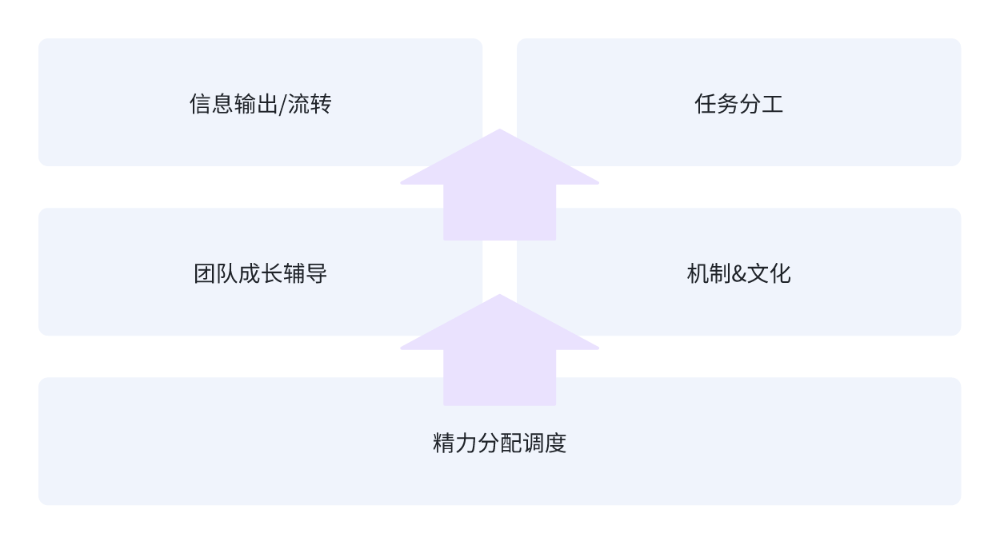

今年进入新的方向后，有幸负责了一部分团队的管理，借以本文记录我的一些认知与实践。
一、背景
此前在主R项目进度时，对于团队管理的思考尚不成体系。作为项目主负责人，只需做好整体技术方案设计、合理分配任务、紧密跟进进度以及处理临时问题，精力主要集中于确保事情顺利完成。
而在人员管理方面，一方面缺乏足够的授权，另一方面也缺乏关注人员相关问题的意识与能力，自然也就无法有效解决相应问题。
今年，我负责管理团队小方向的两位研发同事，有了相对完整的思考与实践。我认为这些方法适用于 2 - 7 人规模的团队管理。
本文会持续迭代。
二、基础认知
个人对于管理的认知：管理是一种工种，本质是要为团队产出、效能负责，要有为团队负责、服务的心态，一切以目标、解决问题为导向。
三、实践方法
对于2-7人的技术团队管理，可以有以下实践方法： 
1.信息输出/流转
- 拉齐团队、项目目标；
- 明确团队分工；
- 拉齐协作、沟通方式（及时汇报进度与风险）；
- 定时与各节点沟通，尽可能抹平信息差，及时给予以及获取反馈；
2.任务分工
- 洞察、明确各人的能力边界，根据能力模型分配任务；
3.团队成长辅导
如果通过TL的作用，一线同学有真的成长（能力、收入、认知等），团队向心力势必提升（士气提升），进一步对团队产生积极作用。
- 识别并指出问题，提供解法（方法、工具）；
- 高P要能解决技术、沟通等核心高难度问题；
- 洞察人的问题，通过一些管理工具、方法解决人的问题（1v1沟通、绩效、成长计划、团建）；
4.机制&文化
- 针对工作流建立SOP，通过标准化提升团队效能；
- 明确团队文化，明确鼓励与抵制的品质；
- 结合绩效、奖金等管理工具，实体化上述文化倡导与抵制动作，通过机制将文化落地，进一步帮助团队成长；
5.精力分配
- 时间精力从一线的开发任务中释放出来，回归到上述管理重点；
- 梳理高优事项，为团队争取高优项目，打回低优先级低质量事项；
- 推动团队不断迭代、不断变强；
四、踩坑
从一线研发转变为虚线的管理，大部分人都会踩坑，下面是我踩的一些关键坑。
1.精力分配问题
初期我还是没有接受自己的身份转变，同时我对自己的技术设计以及进度把控更加自信，所以我会给自己分配比较多的开发任务。
在某些时候，这不是个问题，但是一旦碰上有其他机动的事需要处理，我就忙不过来了，这时候，我就成为了团队的瓶颈。
在后来的反思中，我想到了一点，这种任务分配的方案，一定程度上也会损害团队内成员的积极性。
他们的内心OS可能是：活都你干了，那我就顺势划水摸鱼了。
因此在经历了几次这样的「紧张」时刻之后，我调整了精力分配的方案：只给自己分配较少的任务、通用框架的任务。如果有一件事只有我能解决，这种任务也分配给我。
如果资源不够，考虑其他方案补充人力资源。
分配、调度好自己的精力非常重要，分配不好，相当于管理者在团队中消失了，长此以往，团队将走向混沌。
2.冲突处理不当问题
这里的冲突并不是Git分支的冲突，而是沟通中出现了意见分歧。冲突处理不当，会非常影响团队氛围、士气。
工作中对于方案大家有不同的想法非常正常，每种方案都有各自的优点。有那么一次，我跟团队内同学就聊岔了，没有达成一致。
后来我找这位同学1v1沟通了一次，本着坦诚清晰的原则，就事论事。表明我只是想帮助他解决问题，没有指责的意思。过程中我们也就近期碰到的问题进行了探讨，最后我也提了一些要求，给了一些成长的建议。
第一次发生冲突的时候，其实当下没有处理好。第二次单独沟通，才化解了一些潜在的矛盾。
在这次经历后，我也意识到了「坦诚沟通」的重要性，坦诚沟通可以帮助我发现人相关的问题，进而帮助团队解决这类问题。
做管理后，能够优雅地解决冲突是非常重要的能力，有两个点：
- 鼓励团队发生良性冲突，对事情有不同看法、见解，提升团队活性；
- 杜绝、减少恶性冲突，对人不要有恶意，对人不要武断评价；
一个可能比较片面的观察，挺多人其实比较缺乏冲突处理的能力，这个局限性来自于从小的家庭教育、交友经历；
3.只关注事不关注人
不管做实线的TL还是虚线的小组长，跟做项目的owner的一大区别，我认为就体现在「是否关注人」上。
每个人都不是完美的，我们也不追求完美，但是我们追求进步。
想要追求进步，管理者就需要对团队内的成员成长负责。
想让大家成长，第一点就需要「关注人」。
而这，也是我之前犯的一个错误。
很幸运的是，TL在会议上指出了我的这个问题，我及时做了反思与调整。
现在，我除了做好大家的任务分工，也会关注大家的需求、状态。
4.只关注内部少关注外部
做了管理之后，职责变大了，负责的团队盘子变大了。
这种情况下，就不能只关注当下。换句话说，不能只关注自己，需要关注如何让自己的团队做得更好 + 有更大收获。
仅仅关注团队内部，做到最好，也只是普普通通，说直白点，绩效最多是350。
如何做到更好是一个系统性复杂的问题，我们这里只谈一点，就是管理者需要走出去。
走出去获得关键信息，信息可能来自组织，可能来自其他团队，可能来自其他职能的同事。
有了关键信息，可以帮助我们更好地决策，避免团队落后。
什么是落后？
在我看来，就是避免团队横向对标起来进入「看不懂、学不会、追不上」的困境。
这部分，也是离开工位之后的工作之一。
五、总结
总结一下，团队管理对于一线研发来说，最大的挑战就是思维需要转变。思维转变之后，也具备清晰的认知和有效的实践方法。
本文概述了我的一些实践，主要体现在这些方面：
- 信息流转
- 任务分工
- 团队成长辅导
- 机制&文化
- 精力分配
通过多方面较为完整的方法实践，目前能够解决我实际遇到的大部分问题。
在未来的工作中，我还需要不断探索和完善这些方法。
以上，共勉。